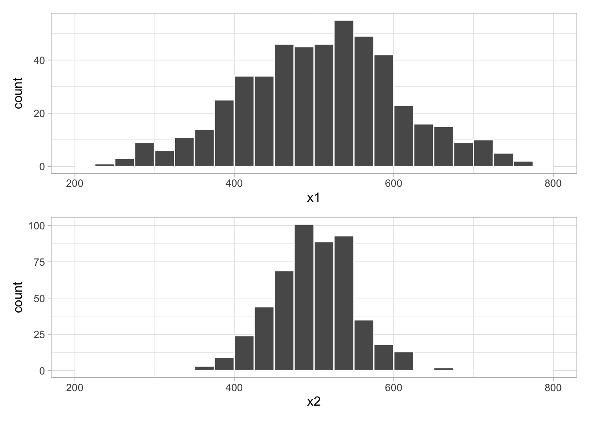

library(tidyverse)
library(moderndive)
library(ggthemes)
library(patchwork)
theme_set(theme_light())MD05 Demo
Load packages and set theme.
Let’s look at the MD evaluations data.
data(evals)
glimpse(evals)Rows: 463
Columns: 14
$ ID <int> 1, 2, 3, 4, 5, 6, 7, 8, 9, 10, 11, 12, 13, 14, 15, 16, 17…
$ prof_ID <int> 1, 1, 1, 1, 2, 2, 2, 3, 3, 4, 4, 4, 4, 4, 4, 4, 4, 5, 5, …
$ score <dbl> 4.7, 4.1, 3.9, 4.8, 4.6, 4.3, 2.8, 4.1, 3.4, 4.5, 3.8, 4.…
$ age <int> 36, 36, 36, 36, 59, 59, 59, 51, 51, 40, 40, 40, 40, 40, 4…
$ bty_avg <dbl> 5.000, 5.000, 5.000, 5.000, 3.000, 3.000, 3.000, 3.333, 3…
$ gender <fct> female, female, female, female, male, male, male, male, m…
$ ethnicity <fct> minority, minority, minority, minority, not minority, not…
$ language <fct> english, english, english, english, english, english, eng…
$ rank <fct> tenure track, tenure track, tenure track, tenure track, t…
$ pic_outfit <fct> not formal, not formal, not formal, not formal, not forma…
$ pic_color <fct> color, color, color, color, color, color, color, color, c…
$ cls_did_eval <int> 24, 86, 76, 77, 17, 35, 39, 55, 111, 40, 24, 24, 17, 14, …
$ cls_students <int> 43, 125, 125, 123, 20, 40, 44, 55, 195, 46, 27, 25, 20, 2…
$ cls_level <fct> upper, upper, upper, upper, upper, upper, upper, upper, u…We are going to ask whether the “beauty” of an instructor predicts their teaching evaluations.
d <- evals |>
rename(bty = bty_avg, # just shorter to type
sex = gender) # actually what they have
glimpse(d)Rows: 463
Columns: 14
$ ID <int> 1, 2, 3, 4, 5, 6, 7, 8, 9, 10, 11, 12, 13, 14, 15, 16, 17…
$ prof_ID <int> 1, 1, 1, 1, 2, 2, 2, 3, 3, 4, 4, 4, 4, 4, 4, 4, 4, 5, 5, …
$ score <dbl> 4.7, 4.1, 3.9, 4.8, 4.6, 4.3, 2.8, 4.1, 3.4, 4.5, 3.8, 4.…
$ age <int> 36, 36, 36, 36, 59, 59, 59, 51, 51, 40, 40, 40, 40, 40, 4…
$ bty <dbl> 5.000, 5.000, 5.000, 5.000, 3.000, 3.000, 3.000, 3.333, 3…
$ sex <fct> female, female, female, female, male, male, male, male, m…
$ ethnicity <fct> minority, minority, minority, minority, not minority, not…
$ language <fct> english, english, english, english, english, english, eng…
$ rank <fct> tenure track, tenure track, tenure track, tenure track, t…
$ pic_outfit <fct> not formal, not formal, not formal, not formal, not forma…
$ pic_color <fct> color, color, color, color, color, color, color, color, c…
$ cls_did_eval <int> 24, 86, 76, 77, 17, 35, 39, 55, 111, 40, 24, 24, 17, 14, …
$ cls_students <int> 43, 125, 125, 123, 20, 40, 44, 55, 195, 46, 27, 25, 20, 2…
$ cls_level <fct> upper, upper, upper, upper, upper, upper, upper, upper, u…Let’s look at the first few cases.
head(d)# A tibble: 6 × 14
ID prof_ID score age bty sex ethnicity language rank pic_outfit
<int> <int> <dbl> <int> <dbl> <fct> <fct> <fct> <fct> <fct>
1 1 1 4.7 36 5 female minority english tenur… not formal
2 2 1 4.1 36 5 female minority english tenur… not formal
3 3 1 3.9 36 5 female minority english tenur… not formal
4 4 1 4.8 36 5 female minority english tenur… not formal
5 5 2 4.6 59 3 male not minority english tenur… not formal
6 6 2 4.3 59 3 male not minority english tenur… not formal
# ℹ 4 more variables: pic_color <fct>, cls_did_eval <int>, cls_students <int>,
# cls_level <fct>We can use the skimr package for summary statistics if we want. There are lots of ways to do this.
library(skimr)
skim(d)| Name | d |
| Number of rows | 463 |
| Number of columns | 14 |
| _______________________ | |
| Column type frequency: | |
| factor | 7 |
| numeric | 7 |
| ________________________ | |
| Group variables | None |
Variable type: factor
| skim_variable | n_missing | complete_rate | ordered | n_unique | top_counts |
|---|---|---|---|---|---|
| sex | 0 | 1 | FALSE | 2 | mal: 268, fem: 195 |
| ethnicity | 0 | 1 | FALSE | 2 | not: 399, min: 64 |
| language | 0 | 1 | FALSE | 2 | eng: 435, non: 28 |
| rank | 0 | 1 | FALSE | 3 | ten: 253, ten: 108, tea: 102 |
| pic_outfit | 0 | 1 | FALSE | 2 | not: 386, for: 77 |
| pic_color | 0 | 1 | FALSE | 2 | col: 385, bla: 78 |
| cls_level | 0 | 1 | FALSE | 2 | upp: 306, low: 157 |
Variable type: numeric
| skim_variable | n_missing | complete_rate | mean | sd | p0 | p25 | p50 | p75 | p100 | hist |
|---|---|---|---|---|---|---|---|---|---|---|
| ID | 0 | 1 | 232.00 | 133.80 | 1.00 | 116.50 | 232.00 | 347.5 | 463.00 | ▇▇▇▇▇ |
| prof_ID | 0 | 1 | 45.15 | 27.55 | 1.00 | 20.00 | 43.00 | 70.5 | 94.00 | ▇▇▆▆▆ |
| score | 0 | 1 | 4.17 | 0.54 | 2.30 | 3.80 | 4.30 | 4.6 | 5.00 | ▁▁▅▇▇ |
| age | 0 | 1 | 48.37 | 9.80 | 29.00 | 42.00 | 48.00 | 57.0 | 73.00 | ▅▆▇▆▁ |
| bty | 0 | 1 | 4.42 | 1.53 | 1.67 | 3.17 | 4.33 | 5.5 | 8.17 | ▃▇▇▃▂ |
| cls_did_eval | 0 | 1 | 36.62 | 45.02 | 5.00 | 15.00 | 23.00 | 40.0 | 380.00 | ▇▁▁▁▁ |
| cls_students | 0 | 1 | 55.18 | 75.07 | 8.00 | 19.00 | 29.00 | 60.0 | 581.00 | ▇▁▁▁▁ |
You could also just use summary(). You don’t get the cool little histograms, though.
summary(d) ID prof_ID score age
Min. : 1.0 Min. : 1.00 Min. :2.300 Min. :29.00
1st Qu.:116.5 1st Qu.:20.00 1st Qu.:3.800 1st Qu.:42.00
Median :232.0 Median :43.00 Median :4.300 Median :48.00
Mean :232.0 Mean :45.15 Mean :4.175 Mean :48.37
3rd Qu.:347.5 3rd Qu.:70.50 3rd Qu.:4.600 3rd Qu.:57.00
Max. :463.0 Max. :94.00 Max. :5.000 Max. :73.00
bty sex ethnicity language
Min. :1.667 female:195 minority : 64 english :435
1st Qu.:3.167 male :268 not minority:399 non-english: 28
Median :4.333
Mean :4.418
3rd Qu.:5.500
Max. :8.167
rank pic_outfit pic_color cls_did_eval
teaching :102 formal : 77 black&white: 78 Min. : 5.00
tenure track:108 not formal:386 color :385 1st Qu.: 15.00
tenured :253 Median : 23.00
Mean : 36.62
3rd Qu.: 40.00
Max. :380.00
cls_students cls_level
Min. : 8.00 lower:157
1st Qu.: 19.00 upper:306
Median : 29.00
Mean : 55.18
3rd Qu.: 60.00
Max. :581.00 It’s always good practice to look at the distributions of each variable.
ggplot(d,
aes(x = score)) +
geom_histogram(boundary = 4,
binwidth = .25,
color = "white")ggplot(d,
aes(x = bty)) +
geom_histogram(boundary = 4,
binwidth = .5,
color = "white") +
scale_x_continuous(breaks = 2:9)Let’s look at the data, using geom_jitter() to avoid overplotting.
ggplot(d,
aes(x = bty,
y = score)) +
geom_jitter(alpha = .3)
It’s hard to tell how strongly (if at all) these two variables are correlated. We can do this a few different ways.
d |> get_correlation(score ~ bty) # MD wrapper function (tibble)# A tibble: 1 × 1
cor
<dbl>
1 0.187d |> select(score, bty) |> cor() # base R version (matrix) score bty
score 1.0000000 0.1871424
bty 0.1871424 1.0000000This correlation isn’t super high, but it’s not nothing. Let’s recall what the correlation means. It’s the expected difference in one variable when the other variable is one standard deviation higher.
Linear regression is another way to summarize a bivariate (i.e., two-way) relationship between quantitative variables. It’s useful because later we can extend to more dimensions of predictors.
We are going to introduce two new functions here:
lm(): a base R function that estimates a linear regressionget_regression_table(): a moderndive function that is a wrapper onbroom::tidy(). You are welcome to usebroom::tidy()or something else if you’d like.
mod1 <- lm(score ~ bty,
data = d)
get_regression_table(mod1)# A tibble: 2 × 7
term estimate std_error statistic p_value lower_ci upper_ci
<chr> <dbl> <dbl> <dbl> <dbl> <dbl> <dbl>
1 intercept 3.88 0.076 51.0 0 3.73 4.03
2 bty 0.067 0.016 4.09 0 0.035 0.099For now, please ignore every column to the right of estimate. We’ll talk about that later. For now let’s consider the estimates. What do these mean?
Begin by looking at this plot.
ggplot(d,
aes(x = bty,
y = score)) +
geom_jitter(alpha = .3) +
geom_smooth(method = "lm", # does this look familiar?
se = FALSE) # don't want to use "standard errors" for now`geom_smooth()` using formula = 'y ~ x'Let’s look at a slightly different version that makes the x-axis go all the way down to zero.
`geom_smooth()` using formula = 'y ~ x'Now we have a clear picture of what these numbers mean. The intercept (often called \(\alpha\) or “alpha”) is the expected value of \(Y\) when \(X = 0\). The slope (often called \(\beta\) or “beta”) is the expected difference in \(Y\) when \(X\) is one unit higher.
If we wanted, we could make our geom_smooth() manually once we know the intercept and slope.
p <- ggplot(d,
aes(x = bty,
y = score)) +
geom_jitter(alpha = .3)
p + geom_abline(intercept = 3.88,
slope = .067,
color = "blue",
size = 1.5)Warning: Using `size` aesthetic for lines was deprecated in ggplot2 3.4.0.
ℹ Please use `linewidth` instead.This should look familiar from middle school. You learned the formula for a line is:
\[ y = mx + b \]
In statistics, it’s a bit different:
\[ \hat{y} = \alpha + \beta x \]
Why \(\hat{y}\) (pronounced “y hat”)? Because as you can see, the line doesn’t pass through all the points. It’s not a deterministic function like a line in geometry. It’s an expectation that summarizes the relationship between two variables with a single line that is the best possible fit.
So if the intercept is 3.88 and the slope is .067, what is the expected evaluation score for an instructor with a “beauty” rating of 8? What about a “beauty” rating of 2?
One categorical predictor
Let’s look at sex differences. Can you tell if there’s a difference between the groups?
ggplot(d,
aes(x = score,
y = sex)) +
geom_jitter(alpha = .3,
height = .2)Superimpose a boxplot.
ggplot(d,
aes(x = score,
y = sex)) +
geom_boxplot(coef = 0,
outlier.alpha = 0,
width = .5) +
geom_jitter(alpha = .3,
height = .2) Do a regression with one categorical predictor.
mod2 <- lm(score ~ sex,
data = d)
broom::tidy(mod2) # instead of get_regression_table()# A tibble: 2 × 5
term estimate std.error statistic p.value
<chr> <dbl> <dbl> <dbl> <dbl>
1 (Intercept) 4.09 0.0387 106. 0
2 sexmale 0.142 0.0508 2.78 0.00558Now you practice
Use the evals data to test some ideas of your own. Call the file like this:
2023-10-10-inclass.qmdggplot(d,
aes(x = score,
y = language)) +
geom_boxplot(coef = 0,
outlier.alpha = 0,
width = .5) +
geom_jitter(alpha = .3,
height = .2) regression <- lm(score ~ language, data = d)
broom::tidy(regression) # A tibble: 2 × 5
term estimate std.error statistic p.value
<chr> <dbl> <dbl> <dbl> <dbl>
1 (Intercept) 4.19 0.0260 161. 0
2 languagenon-english -0.247 0.106 -2.34 0.0198p <- ggplot(d,
aes(x = bty,
y = score)) +
geom_jitter(alpha = .3)
p + geom_abline(intercept = 4.44,
slope = .044,
color = "red",
size = 1.5)Commit it to your repo by the end of class.
What is regression?
Let’s start with the idea of a normal distribution.
set.seed(12345)
# fake data
fd <- tibble(x1 = rnorm(n = 500,
mean = 500,
sd = 100),
x2 = rnorm(n = 500,
mean = 500,
sd = 50))
# wider SD
p1 <- ggplot(fd,
aes(x = x1)) +
geom_histogram(color = "white",
boundary = 500,
binwidth = 25) +
scale_x_continuous(limits = c(200,800))
# narrower SD
p2 <- ggplot(fd,
aes(x = x2)) +
geom_histogram(color = "white",
boundary = 500,
binwidth = 25) +
scale_x_continuous(limits = c(200,800))
# put together
p1 / p2
Formula for a normal distribution.
\[ y_i \sim \text{Normal}(\mu, \sigma) \]
Formula for a linear regression.
\[ \begin{aligned}y_i &\sim \text{Normal}(\mu_i, \sigma) \\\mu_i &= \alpha + \beta x_i\end{aligned} \]
Now any value of \(X\) will have its own conditional mean.